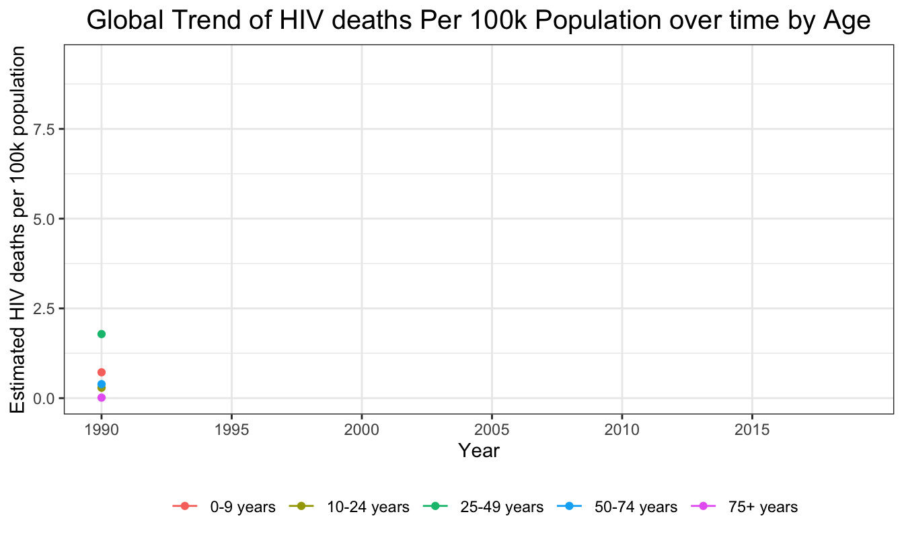

HIV/AIDS Deaths Trends
Global trend of HIV mortality per 100k population: 1990 to 2019
We plot the estimated global HIV mortality per 100k population across 200 countries from 1990 to 2019. The estimated global HIV mortality rate increased from 1990 to 2004, peaked in 2004, and then fell from 2005 to 2019. The global HIV mortality rate in 2004 was 2.88 per 100k population. In 2019, the global HIV mortality rate decreased to 1.13 per 100k population.
death_year = maindata %>%
group_by(year) %>%
summarize(HIV_death = sum(val),
pop_year = sum(population, na.rm = T)) %>%
mutate(HIV_death = as.numeric(HIV_death),
mortality_per_100k = HIV_death/(pop_year/100000))
plot_death_year = death_year %>%
ggplot(aes(x = as.factor(year), y = mortality_per_100k, group=1)) +
geom_line(col = "deepskyblue3", size = 1) +
geom_point(col = "deepskyblue3", size = 2) +
theme(axis.text.x = element_text(angle = -90, hjust = 0)) +
labs(
title = "Global Trend of HIV deaths Per 100k Population: 1990 to 2019",
x = "Year",
y = "Estimated HIV deaths per 100k population"
)
plot_death_year + transition_reveal(year)
Global trend of HIV mortality per 100k population by sex: 1990 to 2019
The trajectories of estimated global HIV mortality for females and males from 1990 to 2019 were similar. Before 1994 and after 2015, the difference in the HIV mortality rate between females and males was virtually indistinguishable. But from 1994 to 2015, the yearly global HIV mortality rate for females was higher than that for males. The average HIV mortality rate in females across 30 years was 2.01 per 100k population. The average HIV mortality rate in males across 30 years was 1.75 per 100k population.
death_gender = maindata %>%
group_by(year, sex_name) %>%
summarize(HIV_death = sum(val),
pop_year = sum(population, na.rm = T)) %>%
mutate(
HIV_death = as.numeric(HIV_death),
year = as.numeric(year),
mortality_per_100k = HIV_death/(pop_year/100000))
plot_death_gender = death_gender %>%
ggplot(aes(x = year, y = mortality_per_100k, col=factor(sex_name))) +
geom_line() +
geom_point() +
labs(title = "Global Trend of HIV deaths Per 100k Population over time by Sex",
x = "Year",
y = "Estimated HIV deaths per 100k population",
color = "Sex") +
scale_x_continuous(breaks = seq(1990, 2019, 5), minor_breaks = F)
plot_death_gender + transition_reveal(year)Global trend of HIV mortality per 100k population by Age: 1990 to 2019
Generally, the estimated global HIV mortality rates from 1990 to 2019 were the highest among young or middle-aged adults (25-49 years), and were the lowest among the elderly (75+ years). Among young or middle-aged adults, the global HIV mortality rate changed the most from 1990 to 2019, with the peak occurring in 2004. The mortality trends were more stable for people in other age groups (0-9 years, 10-24 years, 50-74 years, and 75+ years). Among the people aged over 75 years old, the global HIV mortality rates during the 30 years were low and stable. The average HIV mortality rate in young and middle-aged adults (25-49 years) across 30 years was 5.94 per 100k population. The average HIV mortality rate in elderly (75+ years) across 30 years was 0.053 per 100k population.
death_age = maindata %>%
group_by(year, age_name) %>%
summarize(HIV_death = sum(val),
pop_year = sum(population, na.rm = T)) %>%
mutate(
HIV_death = as.numeric(HIV_death),
year = as.numeric(year),
mortality_per_100k = HIV_death/(pop_year/100000))
plot_death_age = death_age %>%
ggplot(aes(x = year, y = mortality_per_100k, col = factor(age_name))) +
geom_line() +
geom_point() +
labs(title = "Global Trend of HIV deaths Per 100k Population over time by Age",
x = "Year",
y = "Estimated HIV deaths per 100k population",
color = "Age") +
scale_x_continuous(breaks = seq(1990, 2019, 5), minor_breaks = F)
plot_death_age + transition_reveal(year)
HIV Mortality Rate by Country GDP Per Capita: 1990 to 2019
We next wanted to explore the relationship between GDP per capita and HIV mortality per 100k. The below graph shows there was a non-linear negative association between the estimated global HIV mortality rates in the past 30 years and the country GDP. The countries with lower GDP had higher HIV mortality rate. This may be indicative of the fact that poorer countries do not have adequate resources to avert otherwise preventable HIV/AIDS deaths.
hiv_country <- maindata %>% group_by(year,country_name,gdp_per_capita) %>% summarise(death=sum(val),pop = sum(population, na.rm=TRUE)) %>% mutate(mortality_per_100k=((death)/(pop))*100000)
plot_death_GDP <- ggplot(hiv_country, aes(x = gdp_per_capita, y=mortality_per_100k, colour = country_name)) +
geom_point(show.legend = FALSE, alpha = 0.7) +
scale_color_viridis_d(option = "F") +
scale_size(range = c(2, 12)) +
scale_x_log10() +
labs(x = "GDP per capita", y = "HIV Mortality per 100k")
plot_death_GDP + transition_time(as.integer(year))+ labs(title = "Year: {frame_time}") + shadow_wake(wake_length = 0.1, alpha = FALSE)
HIV mortality by Country: 1990 to 2019
We additionally wanted to look at how countries rank in terms of their number of HIV/AIDS deaths. First, we show the 10 countries with the highest total number of HIV/AIDS deaths.
top_10 <- maindata %>% group_by(country_name) %>% summarise(count=sum(val)) %>% arrange(desc(count)) %>% head(n=10)
top_10$count <- format(top_10$count, big.mark=",")
knitr::kable(top_10) %>%
kable_styling(full_width = F) %>%
column_spec(1, width = "50%") %>%
column_spec(2, width = "50%")| country_name | count |
|---|---|
| South Africa | 4,874,295 |
| Kenya | 2,583,538 |
| United Republic of Tanzania | 2,465,046 |
| India | 2,454,374 |
| Nigeria | 2,216,719 |
| Uganda | 2,102,166 |
| Zimbabwe | 1,836,041 |
| Ethiopia | 1,788,431 |
| Mozambique | 1,541,267 |
| Malawi | 1,265,348 |
Next, we show the 10 countries with the highest total number of HIV/AIDS deaths for each year from 1990 to 2019.
knitr::opts_chunk$set(
echo = FALSE,
fig.width = 7,
fig.height = 5,
fig.asp = 0.6,
out.width = "70%")
theme_set(theme_bw() +
theme(legend.position = "bottom",
legend.title = element_blank(),
plot.title = element_text(hjust = 0.5, size = 15),
plot.subtitle = element_text(hjust = 0.5, size = 12)))
hiv_sub<-maindata %>% select(country_name,year,sex_id,val)
n<-unique(hiv_sub$country_name)
country<-function(x){
hiv2<-hiv_sub %>% filter(country_name==x)
sum(hiv2$val)
}
country_total<-sapply(n,function(x) country(x))
top_hiv<- hiv_sub %>% filter(country_name %in% c(
"South Africa",
"Kenya",
"United Republic of Tanzania",
"India",
"Nigeria",
"Uganda",
"Zimbabwe",
"Ethiopia",
"Mozambique",
"Malawi",
"Zambia",
"Cote d'Ivoire",
"Democratic Republic of Congo",
"Cameroon",
"Thailand",
"United States of America"))
top_hiv$sex<-as.factor(top_hiv$sex_id)
hiv3<-aggregate(val~country_name+year,top_hiv,sum) %>%
group_by(year) %>%
mutate(rank = min_rank(-val)) %>%
ungroup()
static_plot<-ggplot(hiv3,aes(rank,group=country_name,fill=as.factor(country_name),color=as.factor(country_name))) +
geom_tile(aes(y = val/2,height = val, width = 0.9), alpha = 0.8, color = NA) +
geom_text(aes(y = 0, label = paste(country_name, ' ')), vjust = 0.2, hjust = 1) +
geom_text(aes(y=val,label = paste(' ',val)), hjust=0)+
coord_flip(clip = 'off', expand = TRUE) +
scale_y_continuous(labels = scales::comma) +
scale_x_reverse() +
guides(color = FALSE, fill = FALSE) +
theme_minimal() +
theme(
plot.title=element_text(size=30, hjust=0.5, face='bold', colour='black', vjust=-1),
plot.subtitle=element_text(size=18, hjust=0.5, face='italic', color='black'),
plot.caption =element_text(size=8, hjust=0.5, face='italic', color='black'),
axis.ticks.y = element_blank(),
axis.text.y = element_blank(),
plot.margin = margin(1,1,1,4, 'cm')
)
plt<-static_plot + transition_states(states = year, transition_length = 4, state_length = 1) +
ease_aes('cubic-in-out') +
labs(title = 'HIV Deaths per Year : {closest_state}',
x='',y='HIV Deaths per year')
final_animation<-animate(plt,100,fps = 20,duration = 30, width = 1000, height = 950, renderer = gifski_renderer())
final_animation
Now we show a table of the 10 countries with the highest total number of HIV/AIDS deaths adjusted for population size, as well as an animation of how the top 10 has changed between 1990 and 2019.
Top 10 countries with highest HIV mortality per 100k
death_country = maindata %>%
group_by(country_name) %>%
summarize(HIV_death = sum(val, na.rm = T),
pop_year = sum(population, na.rm = T)) %>%
mutate(
HIV_death = as.integer(HIV_death)) %>%
mutate(
HIV_death = as.numeric(HIV_death),
count_per_100k = HIV_death/(pop_year/100000))
top_10_high = death_country %>%
filter(count_per_100k != 'Inf') %>%
arrange(desc(count_per_100k)) %>%
mutate(count_per_100k = round(count_per_100k, digits=4)) %>%
head(n = 10) %>%
select(country_name, count_per_100k)
knitr::kable(top_10_high) %>%
kable_styling(full_width = F) %>%
column_spec(1, width = "65%") %>%
column_spec(2, width = "35%")| country_name | count_per_100k |
|---|---|
| Lesotho | 54.3809 |
| Eswatini | 50.6240 |
| Zimbabwe | 49.5544 |
| Botswana | 49.0797 |
| South Africa | 33.9966 |
| Malawi | 32.4034 |
| Zambia | 32.2501 |
| Namibia | 26.7923 |
| Mozambique | 24.7988 |
| Uganda | 24.6188 |
knitr::opts_chunk$set(
echo = FALSE,
fig.width = 7,
fig.height = 5,
fig.asp = 0.6,
out.width = "70%")
theme_set(theme_bw() +
theme(legend.position = "bottom",
legend.title = element_blank(),
plot.title = element_text(hjust = 0.5, size = 15),
plot.subtitle = element_text(hjust = 0.5, size = 12)))
hiv_sub<-maindata %>% select(country_name,year,sex_id,val, population)
top_hiv<- hiv_sub %>% filter(country_name %in% c(
"Lesotho",
"Eswatini",
"Zimbabwe",
"Botswana",
"South Africa",
"Malwai",
"Zambia",
"Nambia",
"Mozambique",
"Uganda",
"Central African Republic",
"Kenya",
"Cameroon",
"Burundi",
"Equatorial Guinea"))
hiv3<-top_hiv %>%
group_by(year, country_name) %>%
summarize(HIV_death = sum(val, na.rm = T),
pop_year = sum(population, na.rm = T)) %>%
mutate(
HIV_death = as.integer(HIV_death)
) %>%
mutate(
HIV_death = as.numeric(HIV_death),
motality_per_100k = HIV_death/(pop_year/100000)) %>%
mutate(rank = min_rank(-motality_per_100k)) %>%
ungroup() %>%
select(-HIV_death, -pop_year)
static_plot<-ggplot(hiv3,aes(rank,group=country_name,fill=as.factor(country_name),color=as.factor(country_name))) +
geom_tile(aes(y = motality_per_100k/2,height = motality_per_100k, width = 0.9), alpha = 0.8, color = NA) +
geom_text(aes(y = 0, label = paste(country_name, ' ')), vjust = 0.2, hjust = 1) +
geom_text(aes(y=motality_per_100k,label = paste(' ',motality_per_100k)), hjust=0)+
coord_flip(clip = 'off', expand = TRUE) +
scale_y_continuous(labels = scales::comma) +
scale_x_reverse() +
guides(color = FALSE, fill = FALSE) +
theme_minimal() +
theme(
plot.title=element_text(size=30, hjust=0.5, face='bold', colour='black', vjust=-1),
plot.subtitle=element_text(size=18, hjust=0.5, face='italic', color='black'),
plot.caption =element_text(size=8, hjust=0.5, face='italic', color='black'),
axis.ticks.y = element_blank(),
axis.text.y = element_blank(),
plot.margin = margin(1,1,1,4, 'cm')
)
plt<-static_plot + transition_states(states = year, transition_length = 4, state_length = 1) +
ease_aes('cubic-in-out') +
labs(title = 'HIV Mortality Rate per 100k by Year : {closest_state}',
x='',y='HIV Mortality Rate by Year')
hivrate_animation<-animate(plt,100,fps = 20,duration = 30, width = 950, height = 750, renderer = gifski_renderer())
hivrate_animation
Top 10 countries with lowest HIV mortality per 100k
Finally we show a table of the 10 countries with the lowest total number of HIV/AIDS deaths adjusted for population size, as well as an animation of how the top 10 has changed between 1990 and 2019.
top_10_low = death_country %>%
filter(count_per_100k != 'Inf') %>%
arrange(count_per_100k) %>% head(n = 10) %>%
mutate(count_per_100k = round(count_per_100k, digits = 4)) %>%
select(country_name, count_per_100k)
knitr::kable(top_10_low) %>%
kable_styling(full_width = F) %>%
column_spec(1, width = "60%") %>%
column_spec(2, width = "40%")| country_name | count_per_100k |
|---|---|
| Albania | 0.0057 |
| Slovakia | 0.0078 |
| Bosnia and Herzegovina | 0.0079 |
| North Macedonia | 0.0087 |
| Kuwait | 0.0103 |
| Syrian Arab Republic | 0.0105 |
| Bangladesh | 0.0109 |
| Czechia | 0.0114 |
| Egypt | 0.0122 |
| Comoros | 0.0125 |
knitr::opts_chunk$set(
echo = FALSE,
fig.width = 7,
fig.height = 5,
fig.asp = 0.6,
out.width = "70%")
theme_set(theme_bw() +
theme(legend.position = "bottom",
legend.title = element_blank(),
plot.title = element_text(hjust = 0.5, size = 15),
plot.subtitle = element_text(hjust = 0.5, size = 12)))
hiv_sub_2<-maindata %>% select(country_name,year,sex_id,val, population)
low_hiv<- hiv_sub_2 %>% filter(country_name %in% c(
"Albania",
"Bosnia and Herzegovina",
"North Macedonia",
"Kuwait",
"Syrian Arab Republic",
"Bangladesh",
"Czechia",
"Comoros",
"Maldives",
"Japan",
"Iraq",
"Slovenia",
"Jordan",
"Finland",
"Croatia"))
hiv3_2<-low_hiv %>%
group_by(year, country_name) %>%
summarize(HIV_death = sum(val, na.rm = T),
pop_year = sum(population, na.rm = T)) %>%
mutate(
HIV_death = as.integer(HIV_death)
) %>%
mutate(
HIV_death = as.numeric(HIV_death),
motality_per_100k = HIV_death/(pop_year/100000)) %>%
mutate(rank = row_number(motality_per_100k)) %>%
ungroup() %>%
select(-HIV_death, -pop_year)
static_plot<-ggplot(hiv3_2,aes(rank,group=country_name,fill=as.factor(country_name),color=as.factor(country_name))) +
geom_tile(aes(y = motality_per_100k/2,height = motality_per_100k, width = 0.9), alpha = 0.8, color = NA) +
geom_text(aes(y = 0, label = paste(country_name, ' ')), vjust = 0.2, hjust = 1) +
geom_text(aes(y=motality_per_100k,label = paste(' ',motality_per_100k)), hjust=0)+
coord_flip(clip = 'off', expand = TRUE) +
scale_y_continuous(labels = scales::comma) +
scale_x_reverse() +
guides(color = FALSE, fill = FALSE) +
theme_minimal() +
theme(
plot.title=element_text(size=30, hjust=0.5, face='bold', colour='black', vjust=-1),
plot.subtitle=element_text(size=18, hjust=0.5, face='italic', color='black'),
plot.caption =element_text(size=8, hjust=0.5, face='italic', color='black'),
axis.ticks.y = element_blank(),
axis.text.y = element_blank(),
plot.margin = margin(1,1,1,4, 'cm')
)
plt<-static_plot + transition_states(states = year, transition_length = 4, state_length = 1) +
ease_aes('cubic-in-out') +
labs(title = 'HIV Mortality Rate per 100k by Year : {closest_state}',
x='',y='HIV Mortality Rate by Year')
hivrate_animation2<-animate(plt,100,fps = 20,duration = 30, width = 950, height = 750, renderer = gifski_renderer())
hivrate_animation2